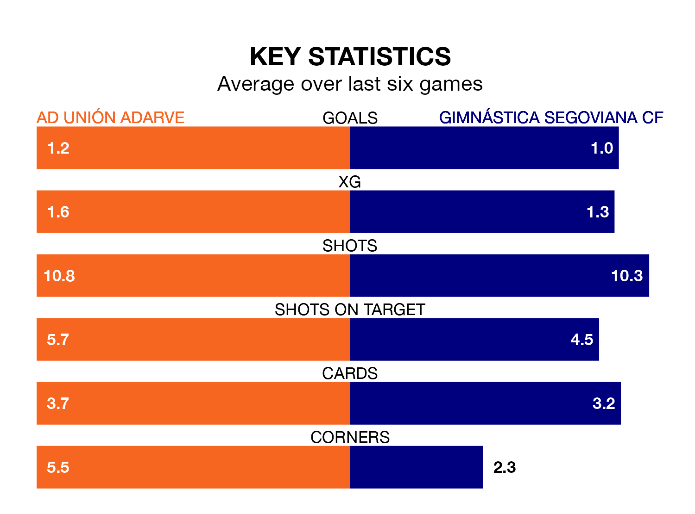

AD Unión Adarve face a challenge to maintain their high-scoring form at home against a tight Gimnástica Segoviana CF defence on Sunday.
With 30 goals in 23 games, Unión Adarve are the joint-third-highest scorers in the Segunda División RFEF Group 5 ahead of the 11am kick-off.
They face a Gimnástica Segoviana side who have scored 27 in 23 matches, but conceded only 19 goals, putting them joint-fourth among the league's tightest defences – only SS Reyes, Atlético Paso and Talavera CF have conceded fewer goals.
Gimnástica Segoviana are third in the table after 23 games, of which they have won 10 and drawn nine, earning 39 points.
Unión Adarve are five places behind the visitors in eighth, with eight wins and 10 draws putting them on 34 points.
In the last 10 years, Unión Adarve and Gimnástica Segoviana have played each other on seven occasions. Unión Adarve won five of them, Gimnástica Segoviana one, and they drew once.
On average, Unión Adarve scored 1.9 goals and Gimnástica Segoviana 0.9 in those matches.
Their last meeting was on October 15, when Unión Adarve won 1-0 away.
The home side are in reasonable form in the Segunda División RFEF Group 5, with three wins and two draws from their last six games.
And also with three wins and two draws over that period, Gimnástica Segoviana's form is identical – they have both taken 11 points from 18.
Unión Adarve's last match was on February 18, a 1-1 draw against CP Cacereño, with Alberto Alburquerque Reus getting the goal for Unión Adarve.
Gimnástica Segoviana beat SS Reyes 1-0 last time out, also on Sunday, with David López Gutiérrez on the scoresheet.
Updated: 12:18 (UTC), 19/02/24